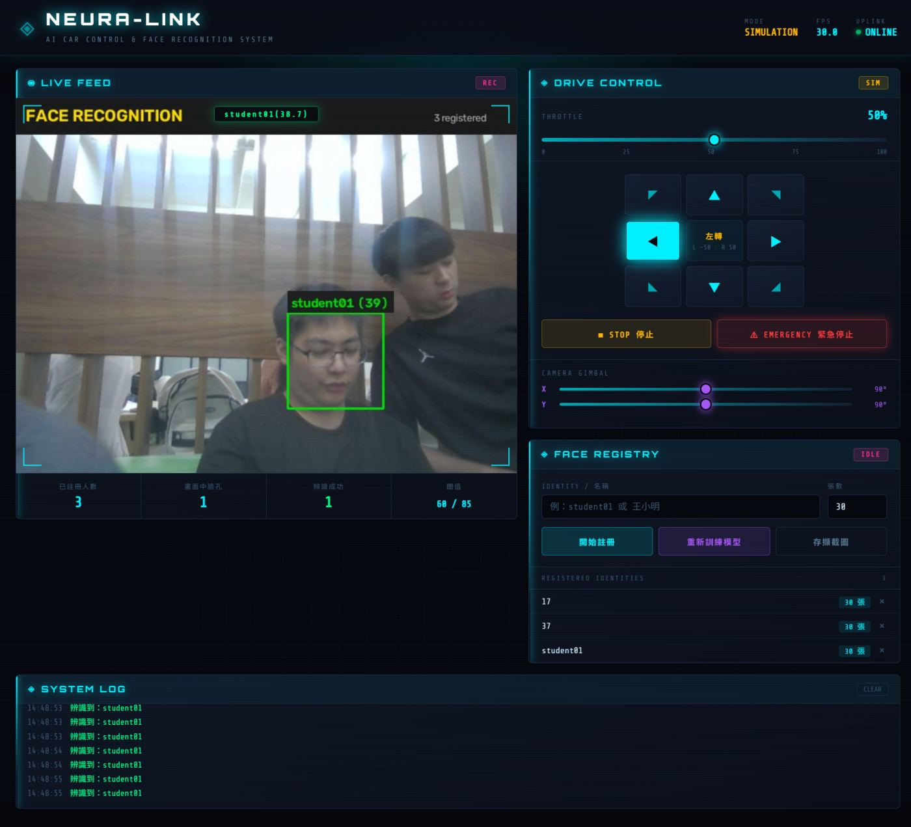
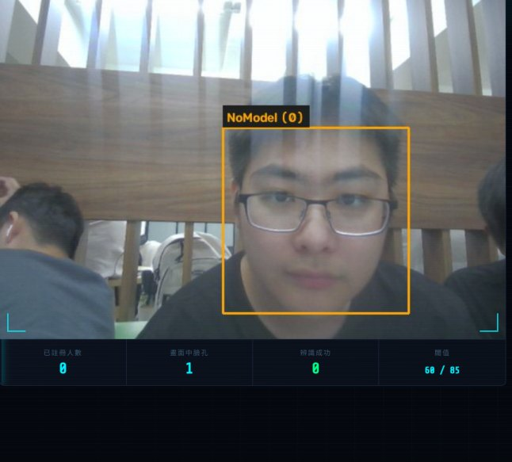

從 Local 到 Web — 結合 Flask 與 YOLOv8 的 AI 自走車｜作業一：人臉辨識
本次作業以 OpenCV 為核心實作人臉辨識系統，分成兩大部分：
為什麼選 HAAR + LBPH 這個組合：
| 技術 | 用途 | 選擇原因 |
|---|---|---|
| HAAR Cascade | 偵測畫面中哪裡有臉 | 純 CPU 即可即時執行（實測 30 FPS），不需要 GPU 或額外模型檔，符合樹莓派效能限制 |
| LBPH | 判斷這張臉是誰 | 訓練只要幾秒鐘（實測 0.1 秒）、模型檔僅 2.8 MB、對光線變化有一定容忍度，非常適合邊緣裝置 |
| 直方圖均衡化 + CLAHE | 影像正規化 | 消除明暗差異，讓同一個人在逆光、偏暗環境下仍能辨識 |
| Flask | Web 後端 | 課程指定，且輕量、部署簡單 |
camera_source.py（鏡頭來源）與 motor_control.py（馬達控制）。
上層程式只呼叫 cam.read() 和 motor.move("forward")，
底層是電腦的 Webcam 還是車上的 Picamera2 完全無感。
face/
├── app.py # Flask Web 主程式（遙控 + 辨識整合）
├── motor_control.py # 馬達控制抽象層（模擬 / 樹莓派真實模式）
├── templates/
│ └── index.html # Web 介面（Cyberpunk 風格）
├── static/
│ ├── css/style.css # 介面樣式
│ └── js/main.js # 前端邏輯
├── collect_faces.py # 收集人臉照片（命令列）
├── train_lbph.py # 訓練 LBPH 模型（命令列）
├── recognize_lbph.py # 即時人臉辨識（命令列 + 視窗）
├── face_core.py # 核心模組：偵測/裁切/正規化/訓練/辨識
├── camera_source.py # 鏡頭抽象層（PC Webcam ↔ RPi Picamera2）
├── self_test.py # 環境與流程自我檢查
├── data/ # 訓練照片（每人 30 張）
│ ├── 17/ 17_001.jpg ~ 17_030.jpg
│ ├── 37/ 37_001.jpg ~ 37_030.jpg
│ └── student01/
├── models/
│ ├── trainer.yml # LBPH 模型本體
│ └── trainer.json # label 對照表
└── logs/整套系統的資料流分成「背景擷取」與「HTTP 回應」兩條線，避免互相阻塞：
┌──────────────────── 背景擷取執行緒 ────────────────────┐
│ │
│ 攝影機擷取 (640×480) │
│ ↓ │
│ 鏡像翻轉 cv2.flip │
│ ↓ │
│ 轉灰階 cvtColor(BGR2GRAY) │
│ ↓ │
│ HAAR Cascade 偵測人臉 │
│ ↓ │
│ 裁切人臉 crop_face（往外擴 25%） │
│ ↓ │
│ 直方圖均衡化 + CLAHE 正規化 │
│ ↓ │
│ LBPH 特徵比對 predict() │
│ ↓ │
│ 閾值判斷 + 連續 3 幀確認 │
│ ↓ │
│ 標註框與名字 │
│ ↓ │
│ 寫入共用狀態（threading.Lock 保護） │
└──────────────────────────┬───────────────────────────────┘
↓
┌──────────────────── Flask 請求執行緒 ──────────────────┐
│ │
│ GET /video_feed → 取最新幀 → 編碼 JPEG → MJPEG 串流 │
│ GET /api/status → 回傳 FPS、臉孔、馬達狀態 │
│ POST /api/motor/* → 馬達指令（MotorControl 加鎖） │
│ POST /api/train → 背景執行緒重新訓練 │
└──────────────────────────────────────────────────────────┘| 模組 | 職責 | 為什麼獨立出來 |
|---|---|---|
face_core.py |
偵測、裁切、正規化、訓練、辨識 | 若三支腳本各寫一份，參數很容易不一致。而 LBPH 只要訓練與辨識的預處理有一點點不同，辨識率就會明顯下降 |
camera_source.py |
統一鏡頭介面 | 電腦用 VideoCapture、車子用 Picamera2，上層程式無需分辨，是「先測後移」的關鍵 |
motor_control.py |
馬達與雲台控制 | 唯一碰硬體的檔案。沒車時用模擬模式，上車改一個參數即可 |
HAAR 的做法是：訓練時用大量「有人臉」和「沒人臉」的樣本，算出人臉區域在水平/垂直方向的明暗變化特徵， 推廣成一個小型決策樹。偵測時把影像逐層縮放，用滑動視窗逐一比對。
detector.detectMultiScale(
gray,
scaleFactor=1.1, # 每次縮小的比例：越小越精確但越慢
minNeighbors=5, # 鄰居門檻：越大越嚴格、誤判越少
minSize=(100, 100) # 最小人臉邊長：過濾遠距離雜訊
)三個參數的取捨：scaleFactor 太小會大幅拖慢速度（實測 1.1 在 640×480 約 30 FPS），
minNeighbors 太低會把牆上的人像海報也當成臉。我們實測 1.1 / 5
是兼顧速度與準確度的設定；若移植到樹莓派，建議放寬到 1.3 / 3 提速。
LBPH = Local Binary Patterns Histograms（局部二元模式直方圖），核心想法是把「紋理」量化成數字：
1、比鄰居小記 0| 參數 | 我們的設定 | 意義與取捨 |
|---|---|---|
radius | 1 | 比較鄰居的半徑。調大能抓更粗的紋理，但特徵維度暴增、速度變慢 |
neighbors | 5 | 鄰域取樣點數。調大更細緻但更慢 |
grid_x / grid_y | 8 / 8 | 切幾格。格子越多特徵越精準，計算量也越大 |
LBPH 的 predict() 會回傳「最近的訓練樣本」和一個 距離（越小越像）。
我們用閾值把結果分成三級：
| 距離範圍 | 判定 | 畫面顯示 |
|---|---|---|
| ≤ 60 | 已註冊的人 | 綠框 直接顯示姓名 |
| 60 ~ 85 | 疑似同一人 | 黃框 顯示姓名但標記為疑似 |
| > 85 | 陌生人 | 橘框 顯示 Unknown |
這些閾值是依據我們的實測數據訂定的（見第 07 節）。
LBPH 吃的是紋理，如果光線變化太大，紋理簽章就會整個改變而認不出人。 所以在裁切之後、餵進模型之前，先做兩道正規化：
def normalize_face(gray_face):
eq = cv2.equalizeHist(gray_face) # 全域均衡化
clahe = cv2.createCLAHE(clipLimit=2.0, tileGridSize=(8, 8))
return clahe.apply(eq) # 局部均衡化以 Cyberpunk / Dark Tech 風格打造，四大區塊：即時影像串流、遙控面板、人臉註冊面板、系統日誌。

畫面中的綠框代表已註冊的人，橘框代表陌生人，框上標示辨識出的姓名與 LBPH 距離值。
下圖是 HAAR 偵測到人臉、但尚未訓練模型時的狀態（顯示 NoModel）。

訓練模型後，同一位使用者的臉會被標示為綠框並顯示姓名與距離值。
assets/shot-recognize.jpg不需要開終端機，直接在網頁輸入名稱並按下「開始註冊」， 系統會自動跳過沒偵測到人臉或人臉太小的畫面，自動拍滿指定張數，進度條即時顯示。
assets/shot-register.jpgassets/shot-people.jpgpython app.py 後開 http://127.0.0.1:5000，
依序做出上面的動作並用系統截圖工具截圖，存到 assets/ 對應檔名即可。
或直接用程式內建的「存擷截圖」按鈕，它會下載成 neuralink_日期.jpg，再改名成對應檔名。
| 模組 | 功能 | 狀態 |
|---|---|---|
| HAAR 偵測 | 即時標出人臉框，含縮放/鄰居/最小尺寸參數 | 完成 |
| LBPH 訓練 | 自動掃描 data/、訓練、輸出模型 | 完成 |
| 即時辨識 | 姓名標註 + 距離顯示 + 陌生人判定 | 完成 |
| 影像串流 | MJPEG 串流，實測 30 FPS | 完成 |
| 線上註冊 | 網頁輸入名稱自動擷取，可追加 | 完成 |
| 遙控面板 | 9 向移動 + 油門 + 雲台 + 緊急停止 | 完成 |
| 馬達控制 | 模擬模式已驗證；真實模式待上車 | 模擬 |
以下是開發過程中實際遇到並解決的問題，依照「花時間最多的」排序。
train_lbph.py 時，每張照片都顯示「偵測不到人臉，略過」，最後報錯「訓練失敗：所有照片都偵測不到人臉」。collect_faces.py 存檔時已經把臉裁切好了，但 train_lbph.py 又對這些「已裁切的臉」再跑一次 HAAR 偵測。
HAAR 需要足夠的周圍對比（頭髮、背景邊緣），對只剩五官的小圖根本偵測不到。crop_face(HAAR框, padding=0.25)，辨識時用同樣的
crop_face(HAAR框, padding=0.25)，訓練時直接用存下的影像。
修正後同一情境的距離從 86 降到 19。python collect_faces.py 王小明 收集照片，程式顯示成功，但用檔案總管去看卻找不到任何檔案。cv2.imwrite() 在 Windows 上走的是 ANSI 路徑 API，遇到中文路徑會直接回傳 False，
不寫檔、也不丟例外。我們實測 cv2.imwrite("中文測試.jpg", img) 確實回傳 False。imencode() 在記憶體中編碼，再用 numpy.tofile() 寫檔（走寬字元路徑 API）：def imwrite_safe(path, image):
path = Path(path)
path.parent.mkdir(parents=True, exist_ok=True)
ok, buf = cv2.imencode(path.suffix or ".jpg", image)
if not ok:
return False
buf.tofile(str(path)) # numpy.tofile 支援寬字元路徑
return Truecv2.VideoCapture(0) 回傳 False，換 DSHOW、MSMF 後端也一樣。pnputil /enum-devices /class Camera 確認裝置有註冊，
但 Get-PnpDevice 的 Status 顯示 Unknown，且 Win32_PnPEntity 完全查不到這台裝置。
pnputil /enable-device 回覆「需要重新啟動您的電腦」，
確認是驅動層的問題，不是程式問題。TrackState.update() 的 if 與 else 兩個分支都寫了
return self.current_label if self.hit_count >= CONFIRM_FRAMES else self.current_label，
三元的兩邊完全一樣，等於沒有判斷。pending_label 暫存候選、pending_hits 累計次數，
只有連續達到 3 幀才把候選升級成 current_label。if label == self.pending_label:
self.pending_hits += 1
else:
self.pending_label = label
self.pending_hits = 1
if self.pending_hits >= CONFIRM_FRAMES:
self.current_label = self.pending_label # 正式確認
return self.current_label, scoredata/ 裡只有 1 個檔案。tester01_001.jpg），
之後每拍一張都覆寫同一個檔案，30 張全部寫進同一個檔名。n = task["count"] + 1
path = Path(task["dir"]) / f"{task['label']}_{n:03d}.jpg"state.register_task = None，
但區域變數可能已指向被新請求取代的舊 dict，會誤殺新任務。
改成先確認 state.register_task is task 才動作。$$('.dbtn').forEach(...)，
但 STOP 按鈕的 class 是 btn btn-stop，不是 dbtn，
所以它從來沒有被綁到事件。$$('[data-action]')，與 class 完全脫鉤，
之後新增按鈕只要有 data-action 就自動生效。\uXXXX；OpenCV 錯誤訊息蓋掉自己的訊息。SetConsoleOutputCP(65001) 強制切 UTF-8。app.config["JSON_AS_ASCII"] 設定已被移除，
改用 app.json.ensure_ascii = False。cv2.FaceRecognizerLBPH_create() 搬到
cv2.face.LBPHFaceRecognizer_create()。寫成相容兩版的 factory，
讓電腦（5.x）與樹莓派（4.x）都能跑同一份程式。OPENCV_LOG_LEVEL=SILENT，並在 Windows 上移除
CAP_ANY（它會退回 FFMPEG 後端，該訊息會繞過 log level）。flush=True。| 項目 | 規格 |
|---|---|
| 作業系統 | Windows 11 |
| Python | 3.12.10 |
| OpenCV | 5.0.0（opencv-contrib-python） |
| NumPy | 2.5.3 |
| 攝影機 | Acer QHD User Facing（內建） |
| 解析度 | 640 × 480 @ 30 FPS |
| 項目 | 結果 |
|---|---|
| 訓練樣本數 | 90 張（3 人 × 30 張） |
| 訓練耗時 | 0.10 秒 |
| 模型檔大小 | 2.8 MB（trainer.yml） |
| 即時辨識 FPS | 30.0 ~ 30.5 FPS |
DETECT_EVERY_N_FRAMES 設為 2~3 跳幀處理。
用未參與訓練的樣本，測試各種光線與距離下的辨識結果：
| 測試條件 | 辨識結果 | LBPH 距離 | 判定 |
|---|---|---|---|
| 正常亮度 | student01 | 19.94 | 正確 |
| 偏暗 0.75 倍 | student01 | 20.67 | 正確 |
| 偏亮 1.25 倍 | student01 | 18.43 | 正確 |
| 距離較遠（scale 0.75） | student01 | 19.14 | 正確 |
| 距離較近（scale 1.2） | student01 | 53.14 | 正確 |
| 偏左 | student01 | 18.98 | 正確 |
| 偏右 | student01 | 19.28 | 正確 |
| 偏暗 + 較遠 | student01 | 47.11 | 正確 |
| 非人臉影像 | Unknown | — | HAAR 直接擋掉 |
python self_test.py 涵蓋 17 項檢查（環境、HAAR、LBPH、攝影機、完整訓練流程）：
2. HAAR Cascade 人臉偵測
[PASS] 載入 haarcascade_frontalface_alt.xml
[PASS] cascade 路徑存在
[PASS] 空白影像回傳空結果（不崩潰）
6. 完整流程（訓練 → 存檔 → 載入 → 辨識）
[PASS] 掃描資料集 → 3 人 × 30 張
[PASS] LBPH 訓練完成 → 90 個樣本
[PASS] 模型檔已輸出
[PASS] Label 對應正確
[PASS] 模型載入成功
[PASS] 辨識命中 student01
[PASS] TrackState 前 2 幀不確認
[PASS] 第 3 幀確認
[PASS] 結果標註繪製
[PASS] HUD 繪製
通過 17 提示 2 失敗 0以下為本次作業的資源連結。橘色虛線框為待填項目，補上實際網址後會變成可點擊的連結。
index.html 中搜尋 link-card pending，
把 <div class="link-card pending"> 改成
<a class="link-card" href="你的網址" target="_blank" rel="noopener">，
並把對應的 </div> 改成 </a> 即可。
HAAR 偵測 + LBPH 辨識
def identify_faces(gray, detector, recognizer, labels):
"""在整張灰階影像上偵測 + 辨識所有人臉"""
results = []
for (x, y, w, h) in detect_faces(gray, detector):
roi = normalize_face(
cv2.resize(crop_face(gray, (x, y, w, h)), (200, 200)))
pred_id, distance = recognizer.predict(roi)
distance = float(distance)
if distance <= THRESHOLD_WEAK and 0 <= int(pred_id) < len(labels):
name = labels[int(pred_id)]
else:
name = "Unknown"
results.append({
"rect": (x, y, w, h),
"name": name,
"distance": distance,
"is_known": name != "Unknown",
})
return results馬達控制的模擬 / 真實雙模式
class MotorControl:
def __init__(self, mode=MODE_SIMULATION):
self.mode = mode
self.lock = threading.Lock() # 保護 I2C，避免多執行緒衝突
def move(self, action, speed=None):
with self.lock:
if self.mode == MODE_SIMULATION:
self._simulate(action, speed)
else:
self._drive(action, speed)
return self.state.to_dict()
def _drive(self, action, speed):
"""真實模式：驅動 PCA9685（課程 I2C / PWM 內容）"""
base, half = speed, speed // 2
left, right = self._wheel_targets(action, base, half)
# 後退緩啟動：避免 RPi 5 瞬時電流尖峰
if action.startswith("backward") and self.soft_start_delay > 0:
time.sleep(self.soft_start_delay)
self._set_channel(self.CH_LEFT, abs(left) / 100.0)
self._set_channel(self.CH_RIGHT, abs(right) / 100.0)_set_channel() 實作的正是課程簡報的 PCA9685 暫存器操作：
LEDx_ON_L = 0x06 + 4x、LEDx_OFF_L = 0x08 + 4x，
PRESCALE = 25000000 / (4096 × 50 - 1) ≈ 121。
目前因為還不能領車而以模擬模式驗證，上車時改 mode=MODE_RPI 即可。
這次作業最大的收穫不是「學會了 HAAR 和 LBPH」， 而是體會到影像處理的環節順序會決定成敗。
我們在 ISSUE 02 卡了最久。程式沒有 crash、訓練沒有報錯、畫面也正常顯示框， 看起來一切正常，但同一個人就是不斷被判定成陌生人。 最後是因為我們很仔細地把每個測試案例的距離數值列出來對照， 才注意到「同一個測試條件，距離居然從 19 跳到 86」。 追下去才發現是訓練與辨識的預處理不一致。
這讓我們體會到：AI 影像處理最容易出現的不是「明顯的錯誤」， 而是「看起來正常但結果微妙地錯」的問題。這種問題靠讀程式碼很難發現， 必須要設計出能揭露差異的測試。之後我們把 self_test.py 寫得很細， 就是希望後續修改時能立刻抓到這類回歸。
第二個收穫是硬體相依要隔離。現在還不能領車，但我們把鏡頭和馬達
分別抽象成 camera_source.py 和 motor_control.py，
用模擬模式就能把整個 Web 介面、多執行緒、API 全部測完。
等車子到手，只要改一個參數就能接上真實硬體，
不用再重寫一輪。雖然多花了時間寫抽象層，但省下的是之後重測的時間。
MODE_RPI 接上 PCA9685，設定 DETECT_EVERY_N_FRAMES 跳幀降低 CPU 負載